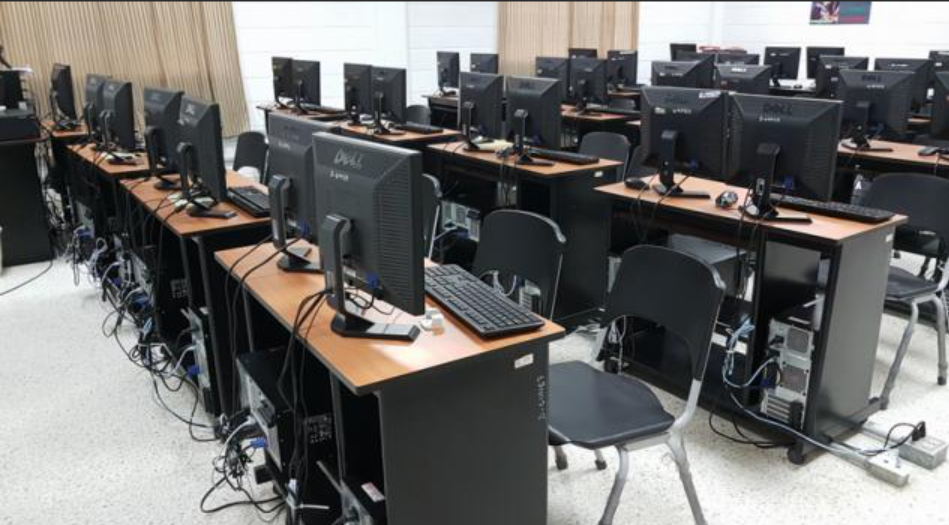
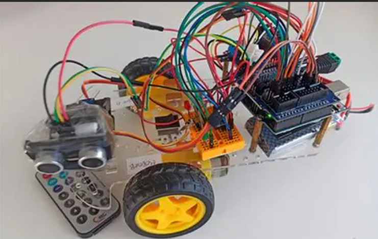

sobre mi
preparacion
inicio
habilidades
proyectos
sobre mi
preparacion
inicio
habilidades
proyectos
sobre mi
preparacion
inicio
habilidades
proyectos
sobre mi
preparacion
inicio
habilidades
proyectos
Edgar actualmente estudiante en campuslands zona 4 ciudad de Guatemala diseño de sotweare graduado de villa de los niños zona 6 Guatemala, Bachiller en ciencias y letrasd con orientacion en electronica industrial. Persona integra con mejoras y aprendizaje continuo.
| Institución | Formación | Foto |
|---|---|---|
| Campuslands | Diseño de sotweare | |
| Villa de los niños | Bachiller en ciencias y letras con orientacion en electronica industrial |
Mi inicio en el mundo de la tecnologia fue a los 12 años, cuando me regalaron mi primera computadora. Desde entonces, me fascinó el potencial de la tecnología para transformar vidas y resolver problemas. A lo largo de los años, he explorado diferentes áreas de la tecnología, desde la programación hasta el diseño de software, y he desarrollado una pasión por crear soluciones innovadoras que puedan marcar una diferencia positiva en el mundo.


| Habilidad | Nivel |
|---|---|
| Programación en Python | Interemedio |
| Diseño de software | Intermedio |
| Trabajo en equipo | Avanzado |
| Proyecto | Descripción |
|---|---|
| Proyecto 1 | Desarrollo de una aplicación móvil para la gestiopn de una tienda. |
| Proyecto 2 | Creación de un sitio web para una pequeña empresa local que ofrece servicios de consultoría como inventarios. |
| Proyecto 3 | Implementación de un sistema que permite la automatización para de procesos utilizando Arduino. |